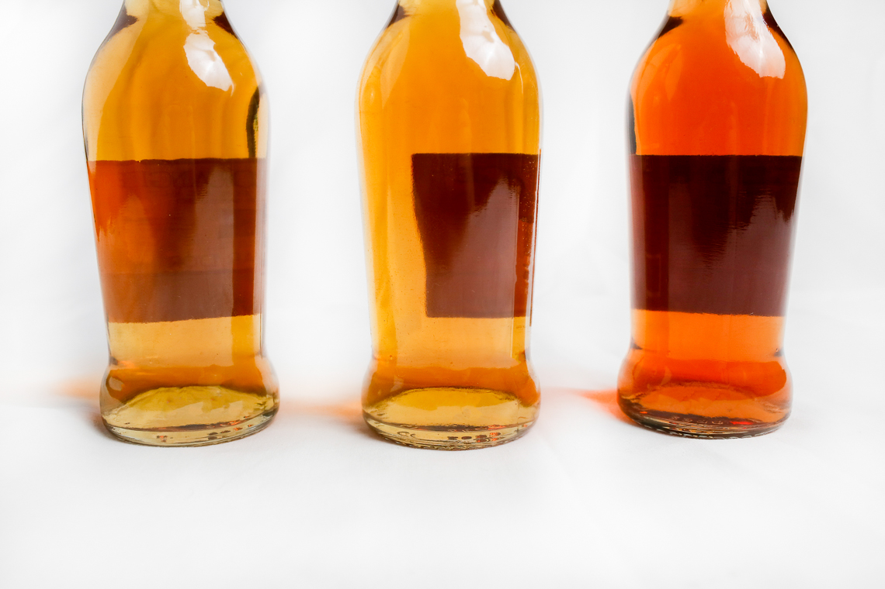

Step 1: Hire a professional product photographer
Professional product photography is one of the best ways to really show your craftsmanship and display your products in a visual way. No matter what you sell or how you promote it, showing off quality photos of your product or your process will be a key selling factor. Especially if you run an online store or promote your products in other ways than on a shelf, quality imagery is important to provide your customers with an accurate and appealing portrayal of what you’re selling.
Marketing psychology proves that people use all their senses when shopping, touch being one of the most important factors for many items with visuals coming in a close second. When certain senses aren’t available to your customers through the Internet, you might rely mainly on visuals to convey texture, smell, size or feelings. Having quality images is key in getting your customers to understand and want what you’re buying!
Step 2: Plan your photoshoot
So you know you need product images but now what? Instead of pulling out your own cell phone or camera, now might be a good time to call a professional product photographer. Taking the actual images is just one step, but there’s a lot of planning, styling and tricks that go into a product session to get crisp and beautiful images.
While your photographer will know the tricks of the trade, it's important that you both collaborate on planning the shoot. Here are some of the most important things to consider when planning your product session.
Play with different colour schemes and textures.
In product photos, the background elements are just as important as the main product. Using different colours or textures can either make your item pop or disappear entirely with too much noise. When designing the scene for your images, we will want to consider the colours and textures of the product and try to choose backdrops, other props and materials that will compliment it.
As well, the props you choose and background colour can totally change the feel of the image. A bright pop of colour in the background can make it feel summery and light, while dark, luxurious textures gives it a more intimate and cozy feeling.
Think about the setting where you would find your product.
When styling your shoot, we will need to consider a setting (or at least create a fake one) that matches your brand, the product, and the feeling you are trying to create. When you think of Roots do you picture the woods, a cottage, the mountains? What kind of textures, colours and props could we use to emulate that even if the mountains aren’t accessible?
Having an “ideal” setting where your product would live can help us style a scene that emulates the same feeling. If your product is really focused on texture or materials, we can draw that as inspiration to get your audience to almost feel the product through the image. If the product smells a particular way, we should place it near items that would invoke associations with the same scent.
Use models and customers to show off your products in the "real world"
Especially if people wear your product, it’s important to show real models using the product in everyday settings, or settings that your target audience frequently occupies. Especially for wearables, people want to imagine what the product would look like on their own body, and how it might fit in with other items they use every day.
As well, if your product is particularly innovative or unfamiliar, showing it in context can give your audience a better idea of how the product fits into their life and might improve a particular experience. Showing motion, steps or other forms of the product being used will help your customers imagine themselves in that situation using that particular product.
Finally, when you do use real models, it's great to have your ideal client in mind, but diversity is super important too! You want to represent all of your potential customers and make sure no one feels left out in sbuying your product. Sometimes the best way to incorporate diversity into your images, without it feeling fake, is to invite actual customers to model your product, either in the studio or by submitting their own photos. Recruiting models can sometimes be tricky, but this is something you can discuss with your photographer to recruit the best people for your particular shoot.
Determine if it's important to show your product's scale.
Is size an important deciding factor when clients buy your product? If so, we’ll want to think of a way to show size in a photograph so that clients still get that sense even if they only see the product online. Often, comparing your product to someone’s hand, a similar product or an overall scene is a great way to demonstrate size.
In terms of actual photographs, this might be a factor we can check off in the “real world” example as well. Having a real person using your product in context is usually enough to showcase the scale of the product as well. For things where size is a big deal (i.e. jewelry, technology, wearables) you might want to be more obvious about it or even include the measurements on the image itself.
Before shoot day make sure items are in good condition and as clean as possible.
Finally, before photographing your items, we need to give each one a thorough inspection. None of your products should be damaged, flawed or broken. Dust, cracks and other flaws will be really evident in photographs where you want the texture and details to be sharp. Because your items will be close-up in images, it needs to look as perfect as possible.
If you need to transport your items to the location of the photographer. Be careful with transport, giving lots of padding. It’s also helpful to provide the photographer with care instructions, so I know how to clean the item right before it’s turn without damaging it. Your photographer will likely have all the tools ready to clean and stage the product, but you may want to provide some extra cleaning materials to your photographer if your products have particular care instructions.
Lastly, make sure the products you choose are the ones you really want to show off! If you create handcrafted items or items that vary a bit, make sure you pick the ones that represent your work best. As well, if you have a particular product in multiple colours, bring them all along so the photographer has options and so you can show each colour separately on your site or brochure.
Step 3: Get ready to sell!
Once you’ve delivered your items to the photographer, be patient! Product images take time to stage properly and to edit. Your photographer should give you a rough timeline of when your images will be ready, and what format you’ll get them in. Details are everything in a shoot like this so the edits might take a bit longer than you’d expect. If you have questions throughout the process, always feel comfortable to ask questions and check in!
Need some new images for your products? Get in touch with me for a free discovery session to discuss your project.
